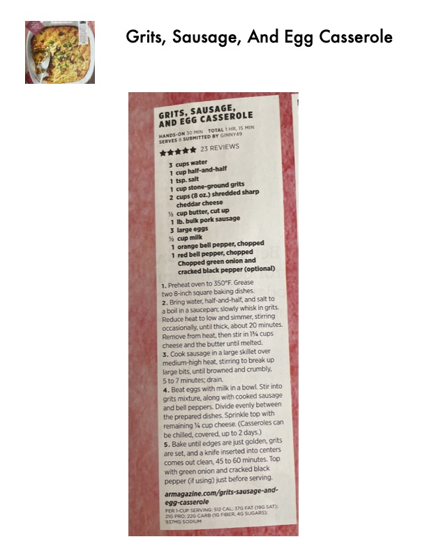

Grits, Sausage, and Egg Casserole

Original cookbook page 180
A hearty breakfast casserole combining creamy stone-ground grits with pork sausage, eggs, bell peppers, and sharp cheddar cheese, baked until golden.
Prep: 30 minutes • Cook: 45-60 minutes • Total: 1 hour, 15 minutes
Ingredients
- 3 cups water
- 1 cup half-and-half
- ¾ tsp. salt
- 1 cup stone-ground grits
- 2 cups (8 oz.) shredded sharp cheddar cheese
- ½ cup butter, cut up
- 1 lb. bulk pork sausage
- 3 large eggs
- ½ cup milk
- 1 orange bell pepper, chopped
- 1 red bell pepper, chopped
- Chopped green onion and cracked black pepper (optional)
Instructions
- Preheat oven to 350°F. Grease two 8-inch square baking dishes.
- Bring water, half-and-half, and salt to a boil in a saucepan; slowly whisk in grits. Reduce heat to low and simmer, stirring occasionally, until thick, about 20 minutes. Remove from heat, then stir in 1¾ cups cheese and the butter until melted.
- Cook sausage in a large skillet over medium-high heat, stirring to break up large bits, until browned and crumbly, 5 to 7 minutes; drain.
- Beat eggs with milk in a bowl. Stir into grits mixture, along with cooked sausage and bell peppers. Divide evenly between the prepared dishes. Sprinkle top with remaining ¼ cup cheese. (Casseroles can be chilled, covered, up to 2 days.)
- Bake until edges are just golden, grits are set, and a knife inserted into centers comes out clean, 45 to 60 minutes. Top with green onion and cracked black pepper (if using) just before serving.
Recipe #180 from collection